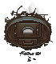
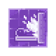

Wall Crematorium
| This article is a stub. You can help Graveyard Keeper Wiki by expanding it. |
| Wall Crematorium | |
|---|---|
 | |
Basic information
| |
Required Technology :
|
Useful Equipment |
Related pages :
|
Morgue |
Building Information
| |
Horizontal x Vertical :
|
?x? |
Rotatable :
|
False |
Location(s)
| |
| Souls room | |

The Wall Crematorium is a location in the Souls Room, accessible with the Better Save Soul DLC. Up to two can be built on the north wall. Unlike the outside Crematorium, they are permanent structures that require Fuel.
Take note: that using the Wall Crematorium will provide two less Ash per body when compared to the outside Crematorium. That being said, it uses significantly less wood to burn a corpse.
Cost
| Icon | Materials Required | Energy | Notes |
|---|---|---|---|
| 4× Complex iron parts 2× Iron chisel 2× A polished brick of stone |
Requires: Useful equipment
Adds + |

Fuel
| Item Produced | Materials Required |
|---|---|
| 20× Fuel |
10× Wooden stick |
| 30× Fuel |
1× Firewood |
| 160× Fuel |
10× Coal |
Recipes
 Corpse burning | |||
|---|---|---|---|
| Item Produced | Materials Required | Fuel | Time |
| 1× Burial certificate 3× Ash 2× Salt |
1× |
?:?? | |

The amount of retrievable materials is not dependent on the remaining body parts, meaning a fully extracted body with no body parts left inside will yield the same amount of ash as a corpse with all body parts remaining.
The amount of wood needed to burn a single body in the wall crematorium is significantly less than what a funeral pyre would need. Even with the most basic skills. The firewood made from the Wood billets at base skills is 80, and that provides 30 fuel a piece. making the wall crematorium 120 times more efficient.
| ||||||||